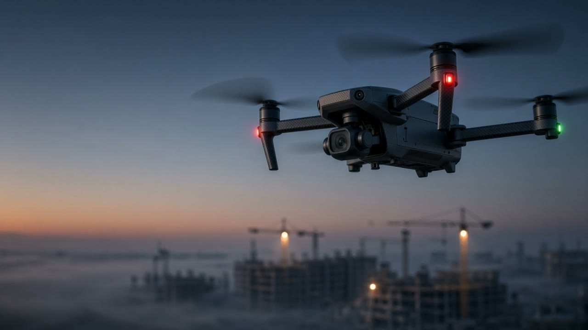

0% · 00:00IDLE LOOPPhysical AI for the real world.
Northstar · Robotics & Drones01 / 08 Dawn · site in fog
Arrival
Idle
The drone hangs big in the frame, nose to camera. Rotors are a constant blur, the red and green nav lights blink, the body bobs a few pixels with the hover. The camera makes one slow orbit around it every 24 seconds, so the cranes behind slide past and the shot never looks like a photo. Fog drifts on the horizon.
On scroll
The headline letters lift and thin out like vapour. The drone tips its nose down, the rotors pitch, and it climbs out of the top of the frame. The camera tilts up to follow and finds the whole site below.
Text
“Physical AI for the real world.” (the founders’ current line) with a small “Scroll to fly” cue at the bottom.
Sound
Optional, off until tapped: a low rotor hum that rises in pitch as it climbs.
Footage
hero loop · havedrone cutout · have